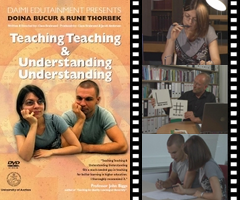
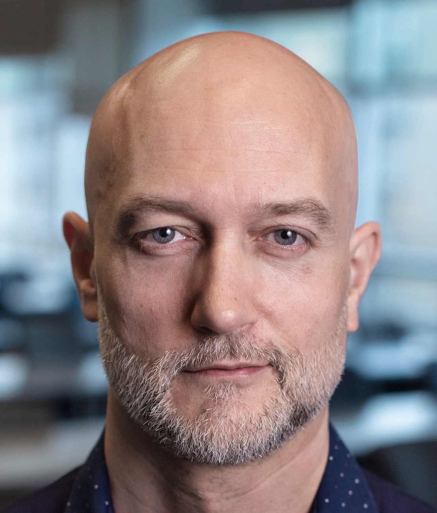

Danish National Teaching Award
Recipient of the (first) Danish National Teaching Award (2020),
presented by H.M. Queen Mary of Denmark.
Awarded to 2 out of ~18,000 university teachers nationwide (500,000 DKK ≈ 67,000 EUR).

Short film: Teaching Teaching & Understanding Understanding
Writer, director, producer, and co-editor.
@misc{brabrand2006ttuu,
author = {Claus Brabrand and Jacob Andersen},
title = {Teaching Teaching \& Understanding Understanding},
year = {2006},
note = {19-minute award-winning educational short film},
publisher = {Aarhus University Press},
url = {https://ttuu.itu.dk/}
}
20-minute award-winning short film about university teaching. It is based on The Theory of Constructive Alignment and The SOLO Taxonomy developed by Professor John Biggs.

Publications
2020s: Computing Education Research (exclusively)
- Computing Educational Activities involving People rather than Things appeal more to Girls (School Perspective)Diversity
- Recursion vs Iteration: Activity-Sensitive differences across Use–Modify–Create Tasks in CS1
- Transforming Code Patterns into Procedural Abstractions: An Empirical Study of De-com-po-si-tion
- Computing Education when Writing Code is No Longer the ChallengeGenAI
- Programming’s Place in Higher Education through Educator and Institutional Perspectives
- Use-Modify-Create turned "Upside-Down" by AI: Towards Higher-Level Competences via the Scientific MethodGenAI
- “Andy’s Axe” as a Guiding Principle for our Stance on AI-in-Education (for Computing)GenAI
- What Does It Mean to Program in the Age of AI?GenAI
- Prompt First, Precision Later: Reviving the Vision of Natural Language Programming for Computing EducationGenAI
- Temporal Correlation between Women studying Computing & Human Development Index (30 years of data)Diversity
- What is Programming? ...and What is Programming in the Age of AI?GenAI
- Circle of Life: Microworld Project at the end of CS1
- Programming Education across Disciplines: a Nationwide Study of Danish Higher Education
- Visualizing the Conceptual Framework of Object Orientation for Novice Programmers
- Invisible Women in IT: Examining Gender Representation in K-12 ICT Teaching MaterialsDiversity
- Programming under the Influence: On the Effect of Heat, Noise, and Alcohol on Programmers
- Feedback on Student Programming Exercises: Teaching Assistants vs Automated Assessment ToolDiversity
- Gender Differences in the Group Dynamics of Smaller CS1 Project GroupsDiversity
- On the Effect of Onboarding Computing Students without Programming-Confidence or -ExperienceDiversity
- Student Perspectives on On-site versus Online Teaching throughout the Covid-19 Pandemic
- Computing Educational Programmes with more Women are more about PEOPLE & less about THINGSDiversity
- Computing Educational Activities Involving People Rather Than Things Appeal More to Women (CS1 Appeal Perspective)Diversity
- Computing Educational Activities Involving People Rather Than Things Appeal More to Women (Recruitment Perspective)Diversity
- How Interaction Influences Academic Reading: A Comparison of Paper and Laptop
- Three +1 Perspectives on Computational Thinking
2010s: Variability & Software Product Lines (predominantly)
- Finding Suitable Variability Abstractions for Lifted Analysis
- Variability Abstractions for Lifted Analyses
- Variability Bugs in Highly Configurable Systems: A Qualitative Analysis
- Effective Analysis of C Programs by Rewriting Variability
- Efficient Family-Based Model Checking via Variability Abstractions
- Variability through the Eyes of the Programmer
- Effective Bug Finding in C Programs with Shape and Effect Abstractions
- Finding Suitable Variability Abstractions for Family-Based Analysis
- How does the Degree of Variability affect Bug Finding?
- A Quantitative Analysis of Variability Warnings in Linux
- Systematic Derivation of Correct Variability-Aware Program Analyses
- Variability Abstractions: Trading Precision for Speed in Family-Based Analyses
- Family-Based Model Checking Without a Family-Based Model Checker
- Family-Based Model Checking using Off-the-Shelf Model Checkers
- Emergent Interfaces for Feature Modularization
- Preface to the Special Section on Language Descriptions, Tools, and Applications (LDTA 2011)
- 42 Variability Bugs in the Linux Kernel: A Qualitative Study
- Systematic Derivation of Static Analyses for Software Product Lines
- SPLLIFT: Statically Analyzing Software Product Lines in Minutes Instead of Years
- Banana Algebra: Compositional Syntactic Language Extension
- SPLLIFT: Statically Analyzing Software Product Lines in Minutes Instead of Years
- Intraprocedural Dataflow Analysis for Software Product Lines
- WebSelF: A Web Scraping Framework
- Emergo: A Tool for Improving Maintainability of Preprocessor-based Product Lines
- Intraprocedural Dataflow Analysis for Software Product Lines
- On the Impact of Feature Dependencies when Maintaining Preprocessor-based Software Product Lines
- A Tool for Improving Maintainability of Preprocessor-based Product Lines
2000s: Programming Languages (predominantly)
- Proceedings of the of the 11th Workshop on Language Descriptions, Tools and Applications, LDTA 2011
- Syntactic Language Extension via an Algebra of Languages and Transformations
- Analyzing Ambiguity of Context-Free Grammars
- Typed and Unambiguous Pattern Matching on Strings using Regular Expressions
- Proceedings of the of the 10th Workshop on Language Descriptions, Tools and Applications, LDTA 2010
- Analyzing CS Competencies using the SOLO Taxonomy
- Syntactic Language Extension via an Algebra of Languages and Transformations
- Using the SOLO Taxonomy to Analyze Competence Progression of University Science Curricula
- Constructive Alignment for Teaching Model-Based Design for Concurrency
- Dual Syntax for XML Languages
- Constructive Alignment and The SOLO Taxonomy: A Comparative Study of University Competencies in Computer Science vs. Mathematics
- Constructive Alignment for Teaching Model-Based Design for Concurrency. Invited Paper for TeaConc'07
- The metafront System: Safe and Extensible Parsing and Transformation
- Constructive Alignment and The SOLO Taxonomy: A Comparative Study of University Competencies in Computer Science vs. Mathematics
- Analyzing Ambiguity of Context-Free Grammars
- Teaching Teaching & Understanding Understanding. 19-minute award-winning educational short-film
- Dual Syntax for XML Languages
- The metafront System: Extensible Parsing and Transformation
- The metafront System: Extensible Parsing and Transformation
- Domain Specific Languages for Interactive Web Services
- The <bigwig> project
- Language-Based Caching of Dynamically Generated HTML
- Growing Languages with Metamorphic Syntax Macros
- Static Validation of Dynamically Generated HTML
- PowerForms: Declarative Client-Side Form Field Validation
- A Runtime System for Interactive Web Services
- A Runtime System for Interactive Web Services
- Synthesizing Safety Controllers for Interactive Web Services
Awards
- Danish National Teaching Award (2020): Recipient of the first Danish National Teaching Award; awarded to two out of approximately 18,000 university teachers in Denmark; 500,000 DKK (€67,000 EUR), handed over by H.M. Queen of Denmark.
- ITU Excellence in Teaching Award (2019): highest average student evaluation rating at ITU: 5.91 on a 1–6 scale, N=99.
- German IT-Security Award (runner up, 2014): for “SPLLIFT: Statically Analyzing Software Product Lines in Minutes instead of Years”; awarded €60,000 EUR with Eric Bodden, Márcio Ribeiro, Társis Tolêdo, Paulo Borba, and Mira Mezini.
- Ph.D. student won dissertation award (2012): Márcio Ribeiro won “Best Dissertation in all of Brazil 2012” in Computer Science.
- Best Tool Award (2011): for “A Tool for Improving Maintainability of Preprocessor-based Product Lines” at CBSoft 2011, with Márcio Ribeiro, Társis Tolêdo, and Paulo Borba.
- The Golden Ratio Award (2006): for the educational short film “Teaching Teaching & Understanding Understanding”.
Ph.D. students
- Sebastian Mateos Nicolajsen:
Finished 2026; co-advised with Louie Meier Carlsen, Marisa Cohn, and Samantha Breslin. Studied introductory programming education. - Jean Melo:
Finished 2017; co-advised with Andrzej Wasowski. Studied variability bugs from a program and programmer perspective. - Iago Abal:
Finished 2017; co-advised with Andrzej Wasowski. Developed the EBA bug finder that has found several bugs in Linux. - Jakob G. Thomsen:
Finished 2013; co-advised with Erik Ernst. Developed code now running in Google Maps. - Márcio Ribeiro:
Finished 2012; co-advised with Paulo Borba. Won “Best Ph.D. Dissertation of Brazil 2012” in Computer Science.
Numbers
Erdős Number: 4 (co-author path)
Paul Erdős -1-> Shmuel Zaks -2-> Dexter Kozen -3-> Michael Schwartzbach -4-> Claus Brabrand
Bacon Number: 4 (co-actor path)
Kevin Bacon -1-> Stream Gardner -2-> Mads Koudal -3-> Richard Raskin -4-> Claus Brabrand
Gauss Number: 12 (supervisee path)
Carl Friedrich Gauss -1-> Friedrich Wilhelm Bessel -2-> Heinrich Ferdinand Scherk -3-> Ernst Eduard Kummer -4-> Carl David Tolmé Runge -5-> Max Born -6-> Viktor Frederick Weisskopf -7-> Murray Gell-Mann -8-> Sidney Richard Coleman -9-> Leonard Emanuel Parker -10-> Prakash Panangaden -11-> Michael I. Schwartzbach -12-> Claus Brabrand
Languages
Contact information
Claus Brabrand
IT University of Copenhagen
Rued Langgaards Vej 7
DK-2300 Copenhagen S
Denmark
brabrand[at]itu[dot]dk
